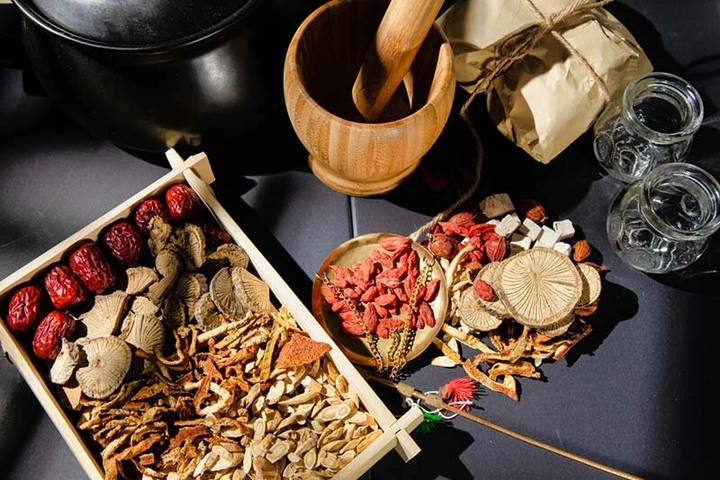
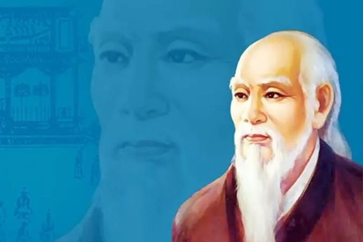
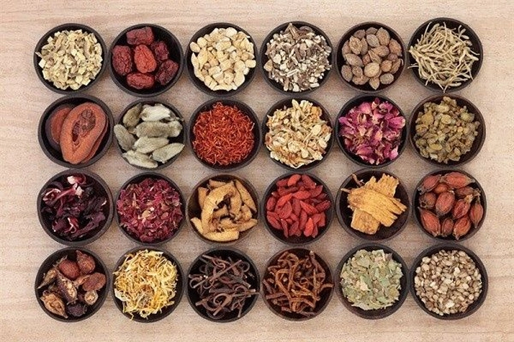
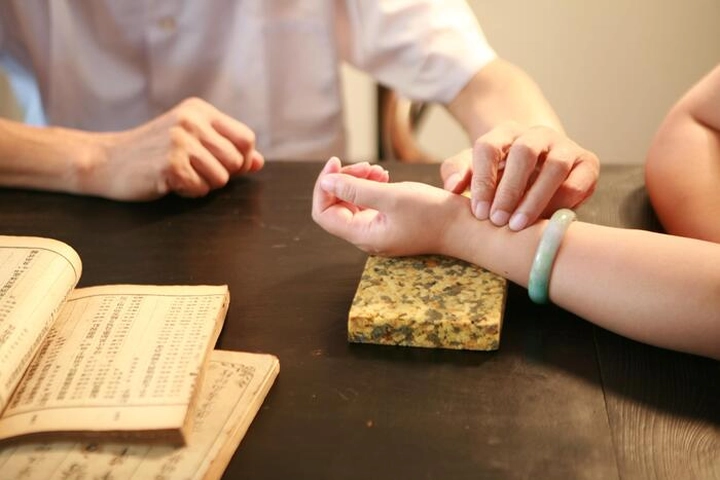

Các bậc thầy y học cổ truyền Việt Nam
Từ thuở xa xưa, khi chưa có bệnh viện hay thiết bị hiện đại, con người Việt Nam đã biết tìm đến thiên nhiên như một vị thầy thuốc. Rễ cây, lá rừng, cỏ dại — tất cả đều có thể trở thành dược liệu, nếu ta hiểu và biết cách sử dụng chúng. Qua hàng nghìn năm, những kinh nghiệm quý báu ấy đã tích tụ, đúc kết thành một kho tàng y học cổ truyền mang đậm bản sắc Việt Nam.
Y học cổ truyền không chỉ là cách chữa bệnh bằng thảo dược, mà còn là triết lý sống hòa hợp với tự nhiên, là sự kết nối giữa thân – tâm – trí. Trong từng thang thuốc, từng bài châm cứu, ẩn chứa cả sự quan sát tinh tế, lòng nhân ái và trí tuệ của bao thế hệ danh y. Chính họ — những bậc thầy y học — đã góp phần định hình bản sắc văn hóa Việt, giúp dân tộc này vượt qua bao đại dịch, thiên tai, chiến tranh mà vẫn bền bỉ sinh tồn.
Từ Tuệ Tĩnh, Hải Thượng Lãn Ông đến các danh y thời cận đại, lịch sử Việt Nam không thiếu những con người dành cả đời cho y đạo, xem việc “cứu người như cứu hỏa” là thiên chức thiêng liêng. Họ không chỉ để lại những công trình y học đồ sộ, mà còn truyền dạy đạo làm thầy thuốc – nơi mà “lương y như từ mẫu” trở thành chuẩn mực cho muôn đời sau.
1. Nguồn gốc và sự hình thành của y học cổ truyền Việt Nam
Y học cổ truyền Việt Nam ra đời từ nhu cầu tự nhiên: chữa bệnh, dưỡng sinh, thích ứng với môi trường sống khắc nghiệt. Từ hàng ngàn năm trước, người Việt đã biết sử dụng cây cỏ quanh nhà để trị bệnh, kết hợp kinh nghiệm dân gian với quan sát tỉ mỉ về cơ thể con người. Những hiểu biết đó dần được hệ thống hóa, tạo nên một nền y học riêng biệt — vừa mang ảnh hưởng phương Đông, vừa đậm nét bản địa.
Trong lịch sử, Việt Nam tiếp thu nhiều yếu tố từ y học Trung Hoa, Ấn Độ, nhưng không sao chép. Người Việt biết chọn lọc và biến đổi phù hợp với điều kiện khí hậu, thổ nhưỡng, tập quán ăn uống và cơ địa người bản xứ. Ví dụ, trong khi y học phương Bắc ưa dùng vị thuốc “hàn – nhiệt” rõ ràng, thì người Việt thường kết hợp mềm mại hơn, chú trọng “dưỡng khí – điều huyết” và sự cân bằng giữa các tạng phủ.

Điểm đặc biệt của y học cổ truyền Việt Nam là tính dân gian và gần gũi. Nhiều bài thuốc được truyền miệng qua các thế hệ: lá trầu trị cảm, củ gừng chống lạnh, cây cỏ mực cầm máu... Những bài thuốc ấy, dù giản dị, vẫn cứu sống biết bao người dân vùng quê. Chính từ nền tảng dân gian đó, y học cổ truyền Việt Nam dần phát triển thành một hệ thống tri thức có tính khoa học, được ghi chép trong các bộ sách như Nam Dược Thần Hiệu hay Hải Thượng Y Tông Tâm Lĩnh.
2. Tuệ Tĩnh – Ông tổ ngành thuốc Nam
Khi nhắc đến y học cổ truyền Việt Nam, cái tên đầu tiên không thể bỏ qua chính là Tuệ Tĩnh – người được tôn vinh là “Ông tổ thuốc Nam”. Sinh vào thế kỷ XIV, tên thật là Nguyễn Bá Tĩnh, ông xuất thân trong một gia đình nông dân nghèo ở Hải Dương. Từ nhỏ, ông đã nổi tiếng thông minh, ham học và sớm nhận ra giá trị của thiên nhiên đối với sức khỏe con người.
Tuệ Tĩnh từng đỗ Thái học sinh (tức tiến sĩ ngày nay), nhưng thay vì ra làm quan, ông chọn con đường tu hành và nghiên cứu y học. Ông đi khắp nơi, thu thập dược liệu, ghi chép công dụng, thử nghiệm và tổng hợp lại thành hệ thống y học đầu tiên mang đậm bản sắc Việt: “Nam dược trị nam nhân” – thuốc Nam chữa người Nam.
Công trình Nam Dược Thần Hiệu của ông được xem là viên đá nền của y học cổ truyền nước ta, ghi lại hơn 600 vị thuốc và hàng trăm phương thuốc dân gian. Tuệ Tĩnh không chỉ giỏi chữa bệnh mà còn đặt nền móng cho triết lý y đạo – y tâm – y thuật: coi trọng lòng nhân, xem việc cứu người là nghĩa vụ thiêng liêng của kẻ sĩ.
Sau này, khi bị đưa sang Trung Quốc, ông vẫn truyền bá y học Việt, lập bia khắc chữ “Nam dược trị nam nhân” để khẳng định niềm tự hào dân tộc. Tư tưởng và di sản của Tuệ Tĩnh đã ảnh hưởng sâu sắc đến nhiều thế hệ thầy thuốc về sau, trong đó có Hải Thượng Lãn Ông.
3. Hải Thượng Lãn Ông – Đại danh y của mọi thời đại
Nếu Tuệ Tĩnh là người mở đường, thì Hải Thượng Lãn Ông – Lê Hữu Trác (1720–1791) là người đưa y học cổ truyền Việt Nam lên đỉnh cao. Sinh ra trong thời loạn lạc, ông từ bỏ quan lộ, rút về quê nghiên cứu y thuật với mục tiêu “cứu người, giúp đời”.
Lê Hữu Trác để lại cho hậu thế tác phẩm đồ sộ Hải Thượng Y Tông Tâm Lĩnh gồm 66 quyển – tổng hợp toàn bộ tinh hoa y học phương Đông, đồng thời bổ sung hàng loạt quan sát mang tính thực nghiệm và triết lý nhân sinh sâu sắc.

Ông nhấn mạnh mối quan hệ giữa thân – tâm – khí – huyết; giữa con người và thiên nhiên; giữa đạo đức và nghề nghiệp.
Triết lý y học của ông vượt khỏi khuôn khổ chữa bệnh. Với Hải Thượng Lãn Ông, người thầy thuốc phải là người có đức, biết đặt sinh mạng con người lên trên danh lợi. Ông từng viết: “Nhân sinh tại thế, quý nhất là nhân nghĩa. Nghề y là nhân nghĩa lớn vậy.”
Không chỉ là danh y, ông còn là nhà triết học và nhà giáo dục y học. Tư tưởng của ông về đạo đức nghề y – “Lương y như từ mẫu” – trở thành kim chỉ nam cho bao thế hệ thầy thuốc Việt Nam, được nhắc lại trong cả nền y học hiện đại.
4. Những danh y tiêu biểu khác trong lịch sử
Ngoài hai vị tổ nổi tiếng, Việt Nam còn có nhiều bậc danh y khác đã góp phần gìn giữ và phát triển nền y học cổ truyền.
Trong thế kỷ XIX, có Nguyễn Đình Chiểu, không chỉ là nhà thơ yêu nước mà còn là thầy thuốc nhân từ, hết lòng cứu giúp dân nghèo dù bản thân bị mù. Ông không xem việc chữa bệnh là nghề, mà là đạo – đạo cứu người trong thời loạn.
Sang thế kỷ XX, các danh y như Nguyễn Thiện Thành, Lê Trọng Tố, Đỗ Tất Lợi đã có công lớn trong việc kết hợp y học cổ truyền với khoa học hiện đại. Đặc biệt, GS. Đỗ Tất Lợi – tác giả Những cây thuốc và vị thuốc Việt Nam – được xem là người “bắc cầu” giữa tri thức dân gian và nghiên cứu khoa học, giúp thế giới biết đến giá trị của thảo dược Việt Nam.
Cũng không thể quên những lang y dân gian – những người thầm lặng chữa bệnh ở vùng sâu vùng xa, lưu truyền các bài thuốc quý bằng kinh nghiệm và lòng tin. Họ là mạch nguồn âm thầm nuôi dưỡng linh hồn của y học Việt, để mỗi nắm lá, củ gừng, củ nghệ… vẫn mang trong mình hơi thở của truyền thống.
5. Tư tưởng và đạo đức nghề y truyền thống
Một trong những điểm nổi bật nhất của y học cổ truyền Việt Nam là tinh thần đạo đức và nhân nghĩa. Người thầy thuốc không chỉ được đòi hỏi giỏi nghề, mà còn phải có tâm sáng, lòng nhân ái và sự khiêm nhường.
Từ Tuệ Tĩnh đến Hải Thượng Lãn Ông, các bậc danh y đều coi “đức” là gốc của “nghề”. Người thầy thuốc giỏi mà vô đức thì chẳng khác nào kẻ cầm dao bén trong tay trẻ nhỏ. Ngược lại, có đức mà thiếu tài thì không đủ để cứu người. Bởi thế, trong Hải Thượng Y Tông Tâm Lĩnh, Lê Hữu Trác luôn nhấn mạnh: “Học thuốc phải học đạo trước, rồi mới học thuật.”
Đạo đức nghề y cổ truyền không chỉ nằm ở lòng thương người, mà còn ở thái độ sống giản dị, tôn trọng tự nhiên và kiên trì quan sát. Thầy thuốc không xem bệnh nhân là “ca bệnh”, mà là con người – một tiểu vũ trụ cần được hiểu và chăm sóc toàn diện.
Ngày nay, dù y học hiện đại đã tiến xa, tinh thần ấy vẫn còn nguyên giá trị. Bởi chữa bệnh không chỉ là trị thân, mà còn là chữa tâm – điều mà y học cổ truyền Việt Nam đã nhận ra từ hàng trăm năm trước.
6. Nam dược và triết lý “thuốc Nam chữa người Nam”
Trong khi phương Bắc có nền y học Trung Hoa với hàng nghìn năm lịch sử, thì Việt Nam vẫn kiên định phát triển một hướng đi riêng – “Nam dược trị Nam nhân”, tức thuốc Nam chữa người Nam. Đây không chỉ là câu nói nổi tiếng của Tuệ Tĩnh, mà còn là triết lý cốt lõi của y học cổ truyền Việt Nam.
Khí hậu nhiệt đới ẩm gió mùa, thổ nhưỡng đa dạng và hệ sinh thái phong phú đã tạo điều kiện cho Việt Nam sở hữu hơn 5.000 loài cây dược liệu. Những cây thuốc như cam thảo, nhân trần, đinh lăng, cỏ ngọt, nghệ vàng… đều mang đặc tính phù hợp với cơ địa người Việt. Không ít vị thuốc mọc ngay trong vườn nhà – thứ mà người xưa gọi là “dược liệu quanh ta”.
Khác với “Bắc dược” thiên về tính hàn – ôn – nhiệt rõ ràng, Nam dược chú trọng vào điều hòa cơ thể, bồi bổ khí huyết, thanh lọc và dưỡng sinh. Người Việt tin rằng bệnh tật sinh ra từ sự mất cân bằng giữa con người và tự nhiên, vì thế chữa bệnh cũng phải từ gốc, chứ không chỉ đối phó với triệu chứng.
Điều đáng trân trọng là qua bao thế kỷ, thuốc Nam vẫn giữ được bản sắc dân tộc: gần gũi, giản dị mà hiệu quả. Nhiều bài thuốc Nam như “trà gừng mật ong”, “nước lá xông”, “cao sao vàng” hay “rượu tỏi” ngày nay vẫn được sử dụng rộng rãi, vừa như một phương thuốc, vừa là biểu tượng của sự khéo léo và tinh tế trong văn hóa Việt.
7. Kết hợp giữa y học cổ truyền và y học hiện đại
Bước sang thế kỷ XXI, y học cổ truyền Việt Nam không còn đứng riêng lẻ mà đang hòa nhập với nền y học hiện đại, tạo nên hướng đi mới: Đông – Tây y kết hợp. Đây là một xu hướng tất yếu trong bối cảnh toàn cầu hóa và nhu cầu chăm sóc sức khỏe toàn diện ngày càng tăng cao.
Nhiều bệnh viện lớn như Bệnh viện Y học cổ truyền Trung ương, Viện Dược liệu, hay khoa Đông y tại các bệnh viện tỉnh đã ứng dụng mô hình này. Trong đó, y học cổ truyền được dùng để phục hồi chức năng, điều trị mạn tính, còn y học hiện đại hỗ trợ chẩn đoán và cấp cứu nhanh.
Ví dụ, bệnh nhân sau phẫu thuật có thể dùng châm cứu hoặc bấm huyệt để giảm đau, lưu thông khí huyết, giúp cơ thể hồi phục nhanh hơn.

Không chỉ trong điều trị, sự kết hợp còn thể hiện ở nghiên cứu khoa học. Các nhà khoa học Việt Nam đã chứng minh nhiều dược liệu dân gian có hoạt tính sinh học cao, như sâm Ngọc Linh (Panax vietnamensis), diệp hạ châu (chữa gan), hay xuyên tâm liên (kháng viêm, kháng virus).
Nhờ đó, y học cổ truyền không còn bị coi là “thần bí” hay “phi khoa học”, mà trở thành lĩnh vực nghiên cứu nghiêm túc với tiềm năng xuất khẩu dược phẩm ra thế giới.
8. Vai trò của y học cổ truyền trong đời sống hiện đại
Giữa thời đại công nghiệp hóa, khi con người ngày càng xa rời thiên nhiên, y học cổ truyền đang trở lại như một “liệu pháp cân bằng cuộc sống”. Người ta tìm đến thuốc Nam, thiền, châm cứu, xoa bóp hay bấm huyệt không chỉ để chữa bệnh, mà còn để tìm sự thư giãn, tái lập năng lượng và gìn giữ sức khỏe từ bên trong.
Tại các thành phố lớn như Hà Nội, TP. Hồ Chí Minh, ngày càng nhiều trung tâm trị liệu Đông y, phòng khám dưỡng sinh mọc lên, phục vụ nhu cầu chăm sóc sức khỏe tự nhiên.
Nhiều người trẻ bắt đầu học cách đun nước gừng, pha trà thảo mộc, hoặc xông hơi bằng lá sả chanh – những thói quen tưởng chừng xưa cũ nay lại trở thành xu hướng “wellness” hiện đại.
Không chỉ ở Việt Nam, trị liệu bằng y học cổ truyền cũng đang được thế giới quan tâm. Tổ chức Y tế Thế giới (WHO) đã công nhận giá trị của y học cổ truyền như một phần của chiến lược chăm sóc sức khỏe toàn cầu. Điều đó chứng tỏ rằng, những tri thức tưởng chừng chỉ thuộc về quá khứ, thực ra vẫn đang đồng hành cùng con người hiện đại trong hành trình tìm về sự cân bằng thân – tâm – trí.
9. Bảo tồn và phát huy di sản y học cổ truyền
Dù giàu truyền thống, y học cổ truyền Việt Nam đang đứng trước nhiều thách thức. Sự mai một của các bài thuốc cổ, nạn khai thác dược liệu bừa bãi, hay việc thế hệ trẻ ít quan tâm đến nghề thuốc Nam đang khiến một phần di sản quý giá dần biến mất.
Nhiều làng nghề y cổ truyền như làng thuốc Nam Thanh Oai, Nam Định hay Nghĩa Trai (Hưng Yên) đang phải vật lộn để duy trì. Trong khi đó, không ít cây thuốc quý đang đứng trước nguy cơ tuyệt chủng do phá rừng và đô thị hóa.
Tuy nhiên, vẫn còn nhiều nỗ lực đáng ghi nhận. Một số trường đại học và viện nghiên cứu đã mở khoa Y học cổ truyền, đào tạo thế hệ thầy thuốc trẻ có cả kiến thức truyền thống lẫn tư duy khoa học.
Các chương trình bảo tồn nguồn gen dược liệu, số hóa sách cổ, hay ghi chép tri thức dân gian của các dân tộc thiểu số cũng đang được triển khai.
Giữ gìn y học cổ truyền không chỉ là bảo tồn một ngành nghề, mà còn là giữ gìn bản sắc văn hóa dân tộc, gìn giữ mối liên kết giữa con người Việt và thiên nhiên – điều đã nuôi dưỡng dân tộc này suốt hàng ngàn năm.
10. Y học cổ truyền – Di sản sống của dân tộc Việt Nam
Hơn bất kỳ lĩnh vực nào khác, y học cổ truyền là minh chứng cho trí tuệ, lòng nhân và tinh thần sáng tạo của người Việt. Nó không chỉ là những bài thuốc hay phương pháp chữa bệnh, mà còn là một hệ thống triết lý sống sâu sắc: tôn trọng tự nhiên, hướng thiện và lấy đức làm gốc.
Từ thầy Tuệ Tĩnh, Hải Thượng Lãn Ông cho đến các danh y hiện đại, mạch nguồn “cứu người – cứu đời” vẫn chưa bao giờ ngừng chảy. Dù thế giới có thay đổi, giá trị ấy vẫn vẹn nguyên – bởi ở đâu có con người, ở đó có bệnh tật, và ở đó vẫn cần lòng nhân ái của người thầy thuốc.

Ngày nay, y học cổ truyền không chỉ tồn tại như một ngành khoa học, mà còn như một phần linh hồn của dân tộc Việt Nam – nhắc nhở chúng ta về mối liên hệ thiêng liêng giữa con người và thiên nhiên, giữa khoa học và lòng nhân.
Kết luận: Khi y đạo là văn hóa, và văn hóa là y đạo
Nhìn lại chặng đường hàng nghìn năm, ta thấy rằng y học cổ truyền Việt Nam không chỉ giúp người Việt chữa bệnh, mà còn dạy cách sống, cách nghĩ, cách làm người. Mỗi thang thuốc là kết tinh của trí tuệ dân gian; mỗi danh y là biểu tượng của lòng nhân hậu, sự kiên định và đức hi sinh.
Trong thời đại số, khi công nghệ y tế phát triển nhanh hơn bao giờ hết, có lẽ điều mà y học cổ truyền nhắc chúng ta nhớ đến chính là tấm lòng. Bởi lẽ, công nghệ có thể cứu được thân xác, nhưng chỉ có lòng nhân mới chữa lành được tâm hồn con người.